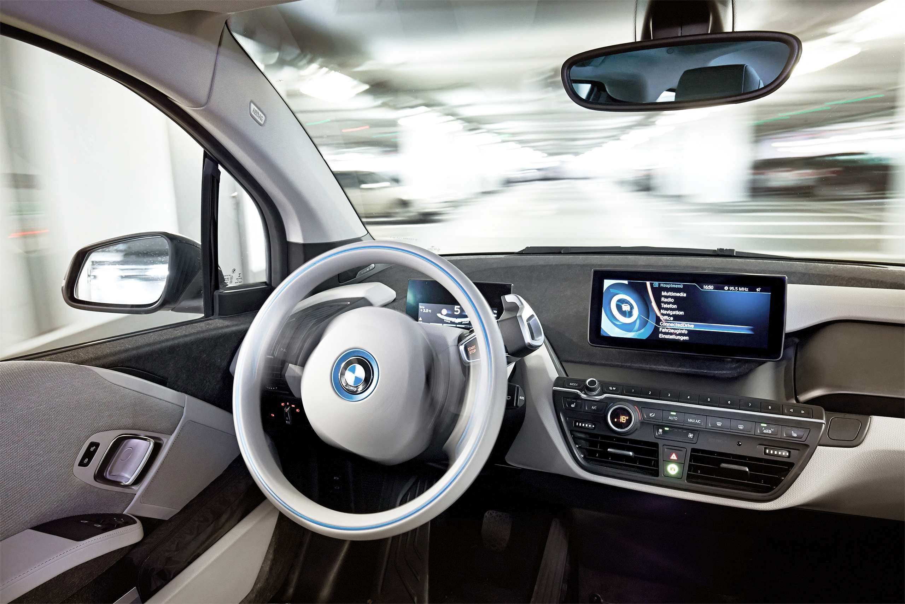
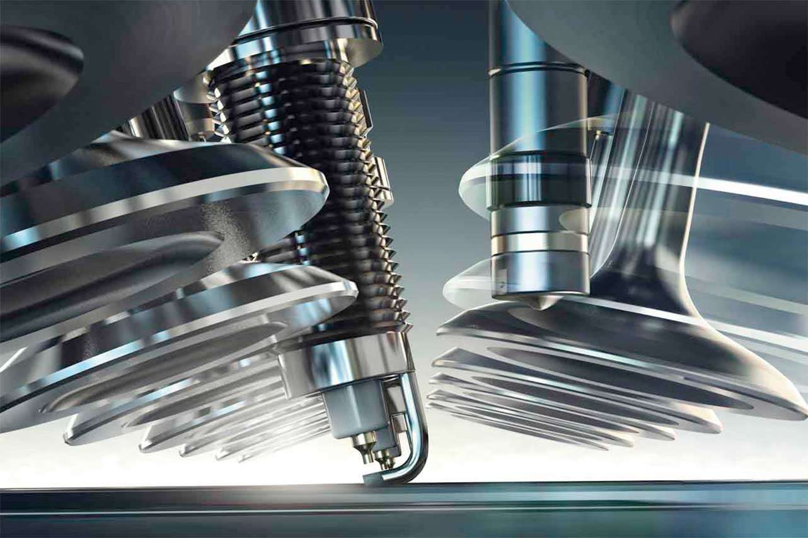

Аббревиатура BMW расшифровывается как «Bayerische Motoren Werke GmbH», что переводится как «Баварские Моторные Заводы». В этом имени скрывается отсылка к родине компании — Баварии. Также оно указывает на изначальную линейку продукции BMW: двигатели для различных задач.
Концерн BMW Group, в который входят бренды BMW, Mini, Rolls-Royce и BMW Motorrad, является ведущим мировым производителем автомобилей и мотоциклов, а также поставщиком финансовых услуг и услуг по обеспечению мобильности премиум-класса. Штат компании насчитывает порядка 125 000 сотрудников в подразделениях по всему миру.


Успех BMW Group всегда основывался на долгосрочном планировании и ответственном ведении бизнеса. Мы достигли экологической и социальной устойчивости на всех этапах прибавления ценности за счет комплексного и ответственного подхода к обеспечению качества продукции и мер по сохранению ресурсов, что является неотъемлемой частью нашей стратегии.